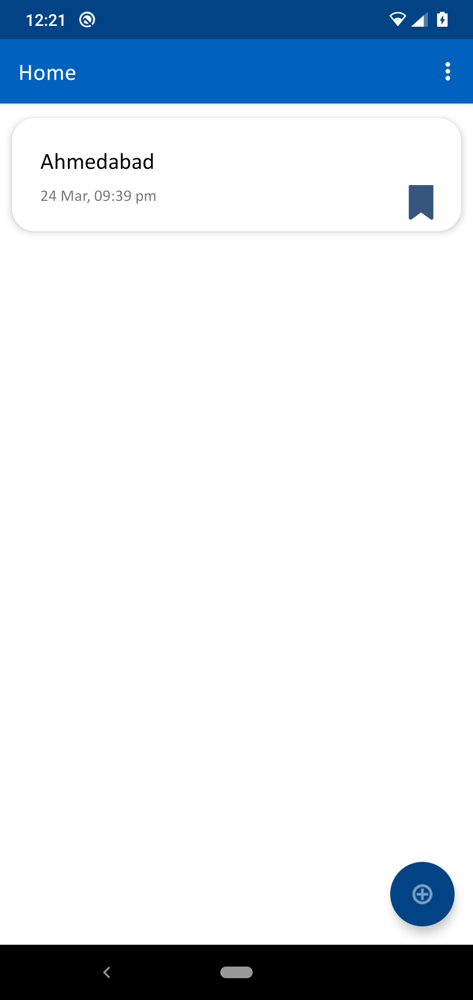
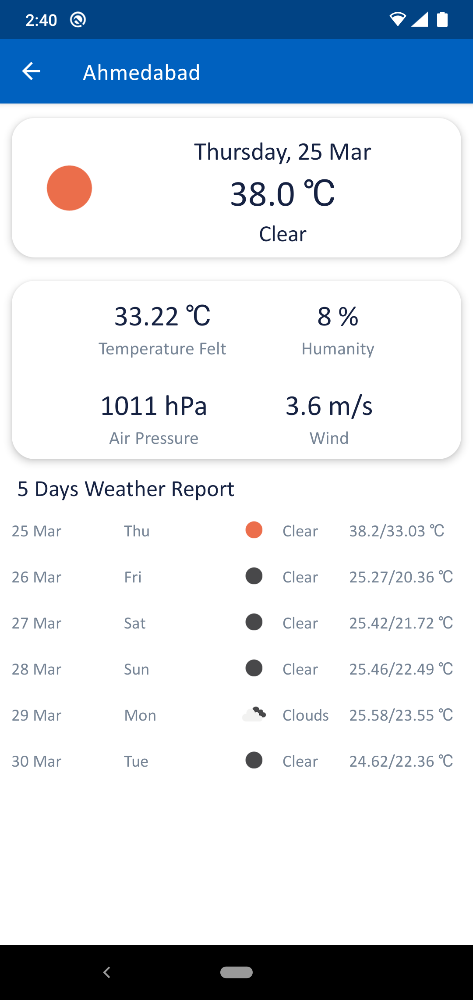

1. Home Screen: You can land in this screen when you start the App. In this screen you can see list of location that you previously bookmarked

2. Add & Remove Location Screen: This is the screen from where you can add location by clicking bottom right fab button. For removing any existing location just click on Remove icon at particular location item and you can see Location remove confirm dialog.
3. Forecast Details Screen: Whenever you tap on bookmark location from home scree list you can navigate to forecast details screen. In this screen you can see toda'y forecast and including 5-days forecast

4. Settings Screen: You can select Unit options from here and you can see temperature and other details as per your selected Unit